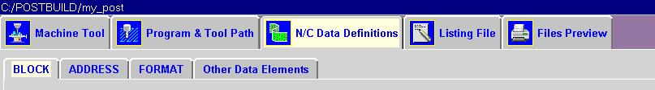
This dialog allows you to create and edit blocks. You have the
same options for creating a new block or editing a block as you do within
the event or sequence dialogs. When you create a new block from this
dialog you are basically copying an existing block and the editing it.
You are limited to a single block. If you need more than one block
for your function, you must create more than one block.
There are two methods that may be used to create a block within Post Builder. From the sequence or event dialogs you may drag a blank block and drop it into a sequence or event. You can also edit any existing block with the sequence, event or N/C Data Definitions block dialog. After you have placed the new block in the correct sequence or selected a block to edit, the following dialog will be displayed so that you can now select words from the word select pull down to edit or build your block.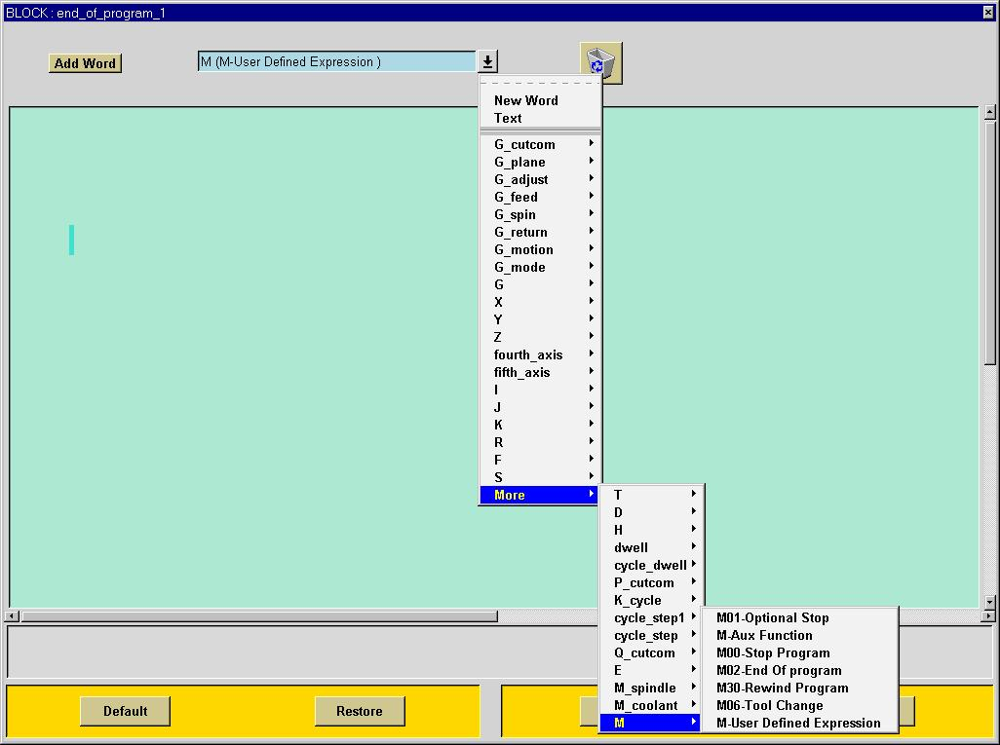
You can build your block by inserting the following elements into your block.
New Word
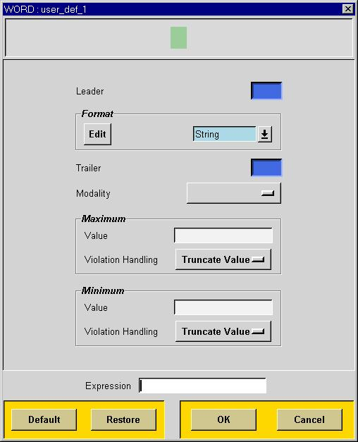Select the New Word option in the word selection pull down dialog. Depress and hold the left mouse button on the Add Word button and drag the word until the highlight appears in the block construction area. Once the word is placed into the block, a dialog will appear to allow you to define the parameters for the word you want to create. See the Word section for editing options.
Text
Select the Text option in the block selection pull down dialog. Depress and hold the left mouse button on the Add Word button and drag the word until the highlight appears in the block construction area. Once the word is placed into the block a dialog will appear to allow you to define the parameters for the word you want to create
Existing Words
Select the word selection pull down dialog and choose the specific word that you would like to add to the current block. Each word from this list has a choice of pre-defined contexts. For instance, the X word can be defined to be output as any one of the definitions on the pull down list or you can specify a specific variable that you create using the User Defined Expression option. If you choose an existing word it will output whatever the current value is for that word. If you choose X-Coordinate for example, it will output an X word with the current X position. See the section on words for details on creating and editing words.
This dialog allows you to create and edit words. You have the
same options for creating a new word or editing a word as you do within
the event or sequence dialogs. When you create a new word from this
dialog you are basically copying an existing word and the editing it.
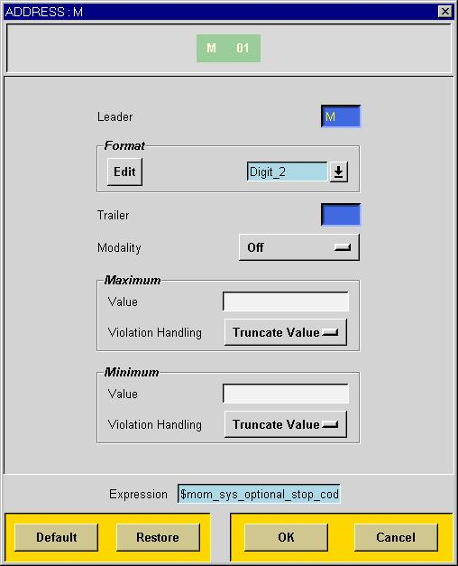
The word dialog allows you to define or edit the characteristics of any word. A word is composed of an address leader, a number or text and a trailer. An address leader may be any characters. For NC code the address leader is usually a single letter such as G, M or X. It can be multiple characters such as R2, (FI, etc. The trailer is usually blank. This is needed for some controls that require formats such as <12.345>. In this case > would be the trailer.
You can specific which format will be used for the current word. You can select from the existing list of formats or you can edit one of the existing formats. If need a completely different format or don't want to change one of the existing formats, you will need to create a new format in the Format section of the NC Data Definitions dialog. The format is used control whether you output the decimal, leading and trailing zeroes etc.
The green rectangle at the top of the dialog shows you what the word will look like when it is output. When you have an word that has a pre-defined context, then the pre-defined representative code will be displayed at the top of the dialog.
The Modality option may be set to Off which means Modal or Always which means Non-Modal. If set to Modal the word will only be output if the value of the expression changes between two blocks of output. This is the default setting for all words. If a word is set to Non-Modal it is output in every block that the word appears. Typically Modal words are for coordinate data, motion G codes, etc. You can always force out within the context of an event. For instance, the Opstop event should always force an M01.
For each word you can also define the maximum and minimum value that will be output with your word. You can also determine what action will take place when maximum or minimum value is exceeded. Your choices are:
The expression defines the number or text that will be used to make your word. The expression can only be defined in the context of an event. The same word used in different events can have different expressions defining the output. For instance, the M word in the Opstop event would use the system code for opstop (1). The M word in the stop event would use the system code for stop (0). The expression cannot be defined in the NC Data Definitions section because that dialog only defines the static characteristics of the word. If you select a word that has a pre-defined context you will not be able to change the expression.Truncate
This setting will cause a warning to be output to the system warning file and continue using the maximum or minimum value.Warning
This setting will cause only a warning to be output.Abort
This setting will cause the postprocessor to stop and report an error.
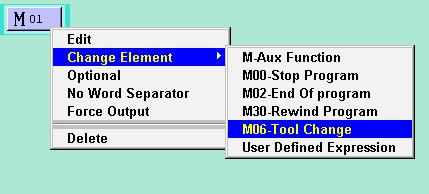
In the above example for M, you can choose from a list pre-defined M-codes. Words use the system variables that are assigned for each function. The Stop Program M-code is defined in the M-code table. You can specify the value for your word by selecting user-defined expression from the list. This expression can be any valid TCL expression. Typically you can enter a number, text or mom variable. See the UG Post online docs for a list of mom variables. For example if want an M10 for your word, enter the text 10 for your expression. This is a valid expression. Other valid expressions are 6 for M6 and the text "spindle" would be Mspindle. All mom variables must be preceded by a $ or they will be considered to be literal text. The text "mom_spindle_speed" is literal text, but the text "$mom_spindle_speed" will be resolved into the current value of the variable "mom_spindle_speed". Note that if you specify digit or numeric formats, your expression must resolve into a number.
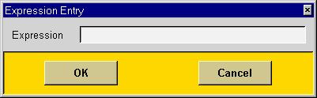
If you make a word optional, that means
that it will only be output if the expression used for that word has been
defined. For example, if you make a block with a word that will turn
on the coolant. If you don't program a coolant UDE in your part program,
the data for coolant will not be set. If you do not use the option
specifier, then you will get a run time TCL error. If you do use
the optional specifier, then you will not get an error, instead you will
get no output. This is what is desired because you will only get
your coolant code output if you program the coolant UDE.
The No Word Separator option allows you to suppress the output of the word separator after the word. This is useful mainly for CLS output.
The Force Output option allows you to force the output of your word within the current block only. This is useful for forcing out a T code or M06 for each tool change. By default all words are modal and will output only if the value changes from one block to the next. Force Output can only be specified within the context of an event or sequence.
UG/Post Builder has grouped the G and M code words into modal groupings. That is, when you output a G17 it does not cancel a G01. However if you output a G00, then a G01, and then a G00 in the third block, the G00 is output again in the third block. This behavior is consistent with the method that machine tool controls output code. UG/Post Builder has also constructed many words with predefined variables to assist you in getting the correct output. For instance, when select an X word to be output in a block, you have a number of choices on how the number will be obtained. If you right click on an X word in any event or sequence dialog you can see what you options are to change how the number will be obtained.
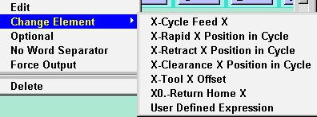
In the above pull down dialog you can use the default setting of the motion x or select one of the options from the list. They all reference different mom variables or constant. See Appendix C for a complete list.
The Format dialog in NC Data Definitions allow you to create and edit formats. Post Builder comes with a complete set of formats for all of the default blocks and addresses. The formats listed here are used in all of the existing blocks. You can also change formats within the context of the words using the word summary dialog.
You can create a new format by highlighting an existing format and selecting create. This will give you a new block exactly like the original except the name will have an _1 after it. You can edit this new format. This is useful when you need a different format for one of your coordinates.
You can change the data type to be numeric or text. This should be done only if you know what you are doing. If you specify text then there is no formatting and all of the other options are not allowed. All NC data should be numeric except for certain G-codes. For instance, if you need L for G01, R for G00, CW for G02, etc. then you can change the type to text and change all of you Motion G codes to the text you want. This is the only case we have found where it is necessary to use a text format.
You can also set the number of digits to left and right of the decimal point, supress or output the decimal point, supress or output leading or trailing zeros or output or suppress the plus sign.
The zero format is used define how a value of zero will be output. The default format will output X0.0 or X0 for coordinate data. If you want X0. or X.0 then you will need to change the number of digits accordingly. For non-decimal data you will get either M00 or M0 depending on whether you suppress leading zeros or not.
Word Separator
You have the following choices.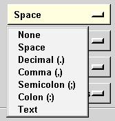
The default setting for the word sepatarator is a space. This means your words will have a space between. Example: N0010 G01 X1.23.
You can also specify any text as your word separator.
End of Block
You have the following choices.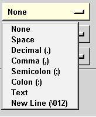
The default end of block is none. The system will place a line feed at the end of every block for you. This is if you need an additional code at the end of block.
Message Start / Message End
You have the following choices.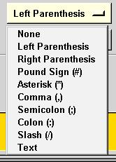 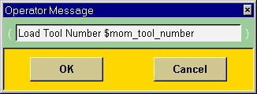 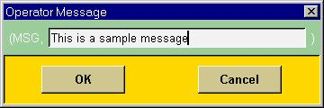
These two characters will define how the system will output operator messages when you construct operator message blocks from the block selection pulldown in the event and sequence dialogs. You can format the exact start and end of message strings with this dialog. The default characters are "(" for message start and ")" for message end. A common message start is (MSG,.